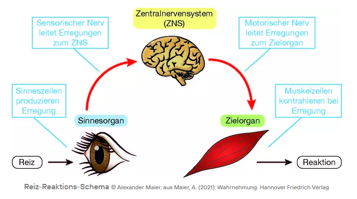
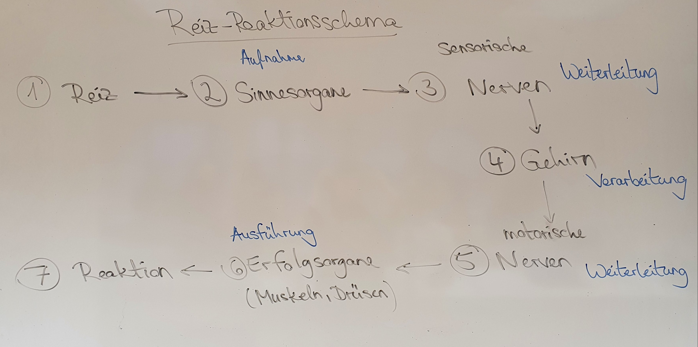
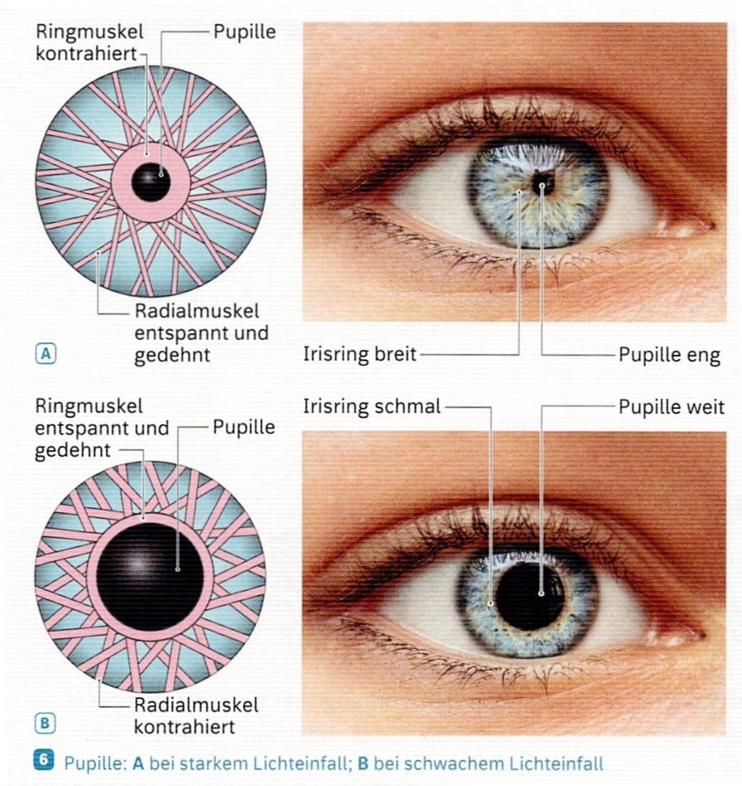
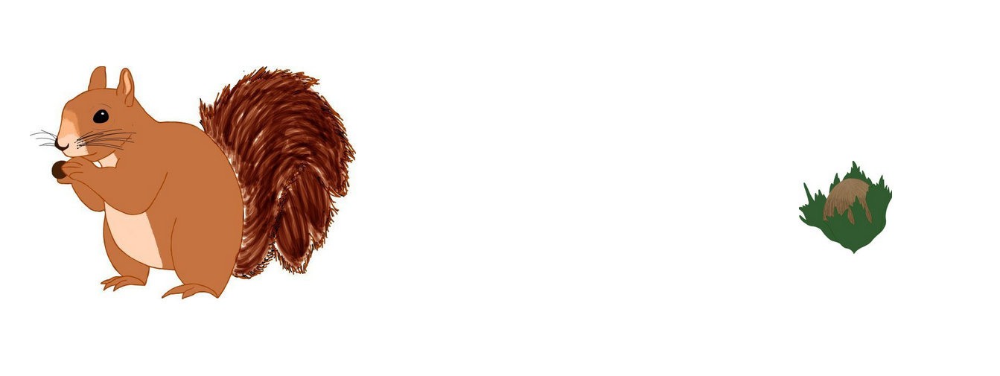

Die Sinne des Menschen
| Website: | Schulische Weiterbildung & Lernwelt @ VHS Essen |
| Kurs: | 1./2. Fachsemester Turbo 1 Frau Rollhäuser |
| Buch: | Die Sinne des Menschen |
| Gedruckt von: | Robin Fehlhaber |
| Datum: | Samstag, 19. September 2026, 19:58 |
1. Unsere Sinne und Sinnesorgane
Unsere Sinne helfen uns, unsere Umgebung zu verstehen. Wenn unser Körper einen Reiz wahrnimmt, senden Milliarden Nervenzellen Signale an unser Gehirn. Das Gehirn wertet diese Signale aus und gibt uns Informationen zu unserer Umgebung. Darauf können wir dann reagieren (zum Beispiel losgehen, wenn die Fußgängerampel grün wird).
Betrachten wir unsere 5 Hauptsinne und die dazugehörigen Sinnesorgane:
- Sehen: Augen
- Hören: Ohren
- Schmecken: Zunge
- Riechen: Nase
- Tasten: Haut
|
Sinnesorgan |
Reiz |
|
Auge |
Licht |
|
Ohr |
Schallwellen |
|
Haut |
Temperatur, Druck, Schmerz |
|
Nase |
Geruchsstoffe |
|
Zunge |
Geschmacksstoffe |
2. Reiz-Reaktionsschema (Signalkette)
Ihnen wirft jemand einen Ball zu. Sie sehen mit Ihren Augen, dass der Ball in Ihre Richtung fliegt. Sie nehmen einen Reiz wahr. Einen Moment später bewegen sich Ihre Arme und Hände und Sie fangen den Ball. Das ist Ihre Reaktion auf den wahrgenommenen Reiz. Das passiert nicht unmittelbar (= sofort), sondern es dauert einen kleinen Moment. Hier sprechen wir von der Reaktionszeit.
Zwischen Reiz und Reaktion ist also Platz. Was passiert dabei?
Betrachten wir diesen Vorgang aus neurobiologischer Sicht:


Abschließend können Sie Ihr erarbeitetes Wissen noch einmal mit dem Erklärvideo festigen.
3. Das Auge
Der Sehsinn und unser dazugehöriges Sinnesorgan das Auge.3.1. äußerer Bau und Funktionen
.jpg)
Schutzfunktionen des äußeren Auges:

3.2. Aufbau des Auges und Funktionen

Die Hornhaut
Sie ist quasi das Fenster des Auges: Sie ist durchsichtig, sodass Licht ins Auge fallen kann. Ihre Außenseite ist mit Tränenflüssigkeit benetzt.
Regenbogenhaut (Iris)
Sie ist die farbige Blende (Verschluss) des menschlichen Auges. Die Farbpigmente dichten die Iris gegen eindringendes Licht ab, damit das Licht nur durch die Pupille in das Auge fällt. An der Iris verlaufen zwei Muskeln, welche die Pupille je nach Lichtverhältnissen vergrößern oder verkleinern.
Pupille
Die Öffnung in der Mitte der Iris. Sie stellt sich immer auf die jeweiligen Lichtverhältnisse ein: Bei Helligkeit ist die Pupille nur eine winzige Öffnung. Bei Dunkelheit dagegen weitet sie sich, um möglichst viel Licht hindurchzulassen. Außerdem wird sie vom Gemütszustand beeinflusst: Bei Angst, Aufregung oder großer Freude kann sich die Pupille weiten. Kinder haben generell größere Pupillen als ältere Menschen.
Linse
Sie bündelt das durch die Pupille eintretende Licht, sodass auf der Netzhaut ein scharfes Bild entsteht. Die Linse ist elastisch und kann ihre Form ändern, um sowohl weit entfernte als auch nahe Gegenstände zu fokussieren. Im Laufe des Lebens wird die Linse immer steifer, sie ist nicht mehr so elastisch. Deswegen kann man im Alter immer schlechter sehen.
Ringmuskel (Ziliarmuskel)
Der
ringförmige Ziliarmuskel ist für die Änderung der Linsenform zuständig. Über die Aufhängebänder (Zonulafasern)
ist er mit der Linse verbunden und stellt sie jeweils passend ein.
Glaskörper
Der Glaskörper füllt das Augeninnere zwischen Linse und Netzhaut aus. Er ist durchsichtig und gelartig. Er sorgt dafür, dass das Auge seine Form behält. Er ist von drei Schichten umgeben.
Die Netzhaut (Retina)
Die extrem lichtempfindliche Innenauskleidung des Auges nennt man Netzhaut. Sie ist mit etwa 127 Millionen Lichtrezeptoren besetzt. Diese wandeln das Licht in Nervensignale um, nachdem es Hornhaut, Linse und Glaskörper durchquert hat. Für das Farbsehen sind Zapfen-Rezeptoren zuständig, für das Hell-Dunkel-Sehen dagegen Stäbchen. Interessanterweise ragen die Zapfen und Stäbchen nicht ins Augeninnere, sondern sie wachsen auf der hinteren Netzhautschicht und zeigen nach außen.
Aderhaut
Sie bildet die Mittelschicht zwischen Lederhaut und Netzhaut. Sie ist reich an Blutgefäßen. Die Aderhaut versorgt die äußeren Schichten der Netzhaut mit Sauerstoff.
Lederhaut
Sie ist das Weiße im Auge. Sie ist sehr kräftig und schützt das Auge vor Verletzungen. Sie umschließt den Augapfel fast vollständig und lässt nur zwei Lücken frei: Vorne für die Hornhaut und hinten für den Sehnerv. Der von außen sichtbare Teil der Lederhaut ist mit durchsichtiger Bindehaut überzogen. Somit ist das Auge gut geschützt.
Sehnerv
Der Sehnerv leitet die Informationen von der Netzhaut an das Gehirn weiter. Er ist ein gewaltiges Bündel aus Nervenfasern und einen halben Zentimeter dick.
Gelber Fleck (Makula)
Liegt im Zentrum der Netzhaut neben der Einmündung des Sehnervs. Er hat seinen Namen von dem gelben Farbstoff Lutein, der dort besonders stark eingelagert ist. In der Mitte des gelben Flecks liegt eine kleine Vertiefung, die so genannte Fovea centralis (Ort des schärfsten Sehens), denn hier sitzen die Lichtrezeptoren so dicht gepackt wie sonst nirgends. Wenn man ein Objekt anschaut, drehen sich die Augen automatisch so, dass das Objekt auf dieser zentralen Vertiefung des gelben Flecks abgebildet wird.
Blinder Fleck (Papille)
An der Stelle, wo der Sehnerv mit der Netzhaut verbunden ist, sitzen keine Lichtrezeptoren.
Deshalb fehlt in dem Bild, das das Gehirn wahrnimmt, immer ein kleines
Stück. Davon bemerkt man im Normalfall aber nichts. Wie auch die
Netzhaut ist der Sehnerv Teil des Gehirns.

3.3. Aufbau und Funktion

Der Augapfel liegt geschützt in der knöchernen Augenhöhle. Im Spiegel ist nur der vordere Bereich des Auges sichtbar, der von den Augenlidern begrenzt wird. Die Bindehaut liegt auf der Innenseite des Augenlids und bedeckt den Augapfel bis zur durchsichtigen Hornhaut. Die Hornhaut liegt über der farbigen Iris, in deren Mitte sich eine kleine runde Öffnung befindet, die Pupille. Die Hornhaut verhindert das Eindringen von Krankheitserregern. Die Hornhaut verleiht dem Auge zusammen mit dem Glaskörper und der mit Flüssigkeit gefüllten Augenkammer Form und Stabilität. Unter der Lederhaut liegt die Aderhaut. Über ihre Blutgefäße wird das Auge mit Nährstoffen und Sauerstoff versorgt. Licht, das durch die Pupille fällt, trifft zunächst auf die durchsichtige Linse. Sie ist über Linsenbänder an einem Ringmuskel aufgehängt, der sie ringförmig umschließt. Bevor das Licht auf die Netzhaut trifft, gelangt es durch den gelartigen Glaskörper. Der Sehnerv leitet die aufgenommenen Reize zum Gehirn weiter.
Berühren Fremdkörper die Wimpern, schließen sich Augenlider blitzschnell (Lidschlussreflex). So können sie nicht in das Auge eindringen. Gelangen doch Fremdkörper in das Auge, werden sie über den Tränenkanal in die Nasenhöhle gespült. Dazu produziert die seitlich hinter dem Oberlid liegende Tränendrüse eine salzhaltige Flüssigkeit. Durch blinzeln wird diese Flüssigkeit über die Augenoberfläche verteilt. So wird das Auge geschützt und befeuchtet. Auch Sonnenlicht kann das Auge schädigen. Damit nicht zu viel grelles Licht in das Auge fällt, verkleinert sich die Pupille der Iris (Pupillenreflex). Der Lichteinfall wird geringer. Fällt hingegen wenig Licht in das Auge, vergrößert sich die Pupille. Der Lichteinfall nimmt zu. Man nennt diese Hell-Dunkel-Anpassung des Auges Adaptation.
3.4. Regulation des Lichteinfalls

Die Pupille ist vom Iris-Ringmuskel umgeben, an dem sich die Iris-Radialmuskeln anschließen. Bei starkem Lichteinfall zieht sich der Ringmuskel zusammen. Man sagt, er kontrahiert. Der Radialmuskel ist dabei entspannt und wird gedehnt. So wird die Pupille kleiner und der Ringmuskel breiter. Es fällt weniger Licht auf die Netzhaut. Bei schwachem Lichteinfall ziehen sich die Radialmuskeln zusammen, der Ringmuskel entspannt und wird gedehnt. Dadurch wird die Pupille größer und es fällt mehr Licht auf die Netzhaut. Der Iris-Ringmuskel und die Radialmuskeln arbeiten nach dem Gegenspieler-Prinzip.
Folgender Link stellt den Reflex noch einmal dar:
3.5. Netzhaut

Die Netzhaut hat zwei Typen lichtempfindlicher Zellen: die Stäbchen und die Zapfen. Die Stäbchen nehmen nur hell und dunkel wahr. Sie sind allerdings sehr lichtempfindlich, so dass sie auch noch bei geringer Lichtstärke arbeiten. Wenn man nur mit den Stäbchenzellen sehen könnte, erschiene die Welt schwarz-weiß. Bei den Zapfen gibt es drei verschiedene Arten: Es sind die rotempfindlichen, grünempfindlichen und blauempfindliche Zapfenzellen. Die Zapfen sind weniger lichtempfindlich als die Stäbchen. Deshalb verändert sich in der Dämmerung, wenn wenig Licht vorhanden ist, die Farbwahrnehmung. Daher stammt das Sprichwort: Nachts sind alle Katzen grau. Auf der Netzhaut gibt es einen Bereich, in dem man besonders gut sehen kann. Diese Stelle des schärfsten Sehens nennt man den gelben Fleck oder Sehgrube. Diese Stelle liegt genau dort, wo ein senkrecht durch die Pupille einfallender Lichtstrahl auftrifft. Im gelben Fleck liegen fast nur farbempfindliche Zapfen. Daher sind bei sehr schwachem Licht Gegenstände, die direkt mit dem Blick fixiert werden, kaum wahrzunehmen. Wo der Sehnerv die Netzhaut durchbricht, liegen keine Lichtsinneszellen. Man spricht deshalb vom blinden Fleck.
3.6. Experiment: Blinder Fleck
Durchführung: Unter diesem Text sehen Sie ein Eichhörnchen und eine Haselnuss. Kommen Sie mit Ihrem Gesicht nahe an den Bildschirm heran. Halten Sie sich das linke Auge zu und betrachten Sie mit dem rechten Auge ganz intensiv das Eichhörnchen. Das Eichhörnchen sollte sich genau vor Ihrem rechten Auge befinden. Nun können Sie sich langsam von der Zeichnung entfernen, allerdings ohne dabei die Blickrichtung zu ändern.

Aufgabe 1: Beschreiben Sie Ihre Beobachtungen, wenn Sie sich langsam mit dem Kopf vom Bildschirm entfernen.
Aufgabe 2: Erläutern Sie Ihre Beobachtungen.
Durchführung: Gehen Sie analog zu der Abbildung mit dem Eichhörnchen und der Haselnuss vor. Betrachten Sie dabei den Punkt auf der linken Seite.
.png)
Aufgabe 3: Beschreiben Sie Ihre Beobachtungen, wenn Sie sich langsam mit dem Kopf vom Bildschirm entfernen.
Aufgabe 4: Erklären Sie Ihre Beobachtungen.
3.7. Lösung
Aufgabe 1: Bei einem bestimmten Abstand scheint die Haselnuss zu verschwinden.
Aufgabe 2: Im hinteren Teil des Auges befindet sich die Netzhaut. Auf ihr sitzen sehr viele Sinneszellen, welche die Informationen über das einfallende Licht aufnehmen und über den großen Sehnerv an das Gehirn weitergeben. Die Stelle, an der der Sehnerv aus dem Auge heraustritt, wird als blinder Fleck bezeichnet, da hier keine Sinneszellen vorkommen. Das ist der einzige Bereich ohne Nervenzellen, auf allen anderen Stellen der Netzhaut sind zahlreiche Sinneszellen vorhanden.
Aufgabe 3: Bei einem bestimmten Abstand sieht man eine komplett ausgefüllte Tabelle und das "weiße Loch" ist verschwunden.
Aufgabe 4: Sobald das weiße Fenster in der Tabelle auf den blinden Fleck trifft, sieht man eine komplett ausgefüllte Tabelle, da das Gehirn die Lücke mit anderen Bildinformationen (aus der nahen Umgebung) füllt. Daher fällt der blinde Fleck im Alltag normalerweise nicht auf, weil das Gehirn diese Stelle mit anderen Bildinformationen füllt.